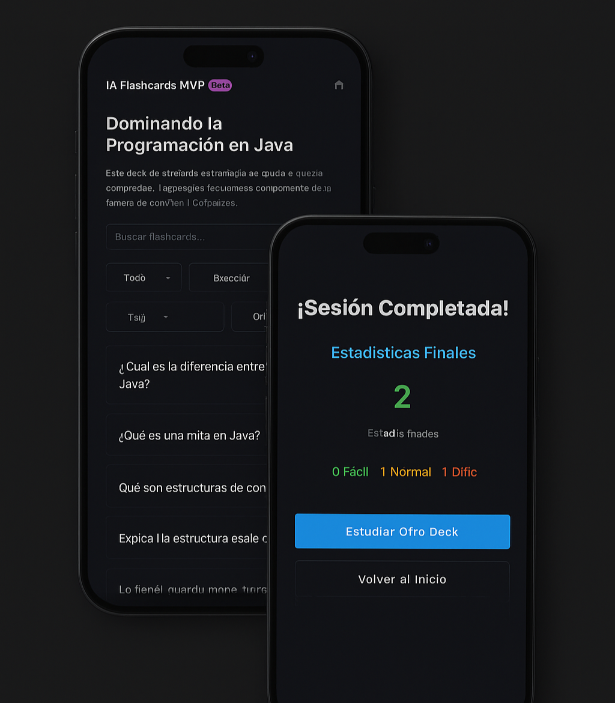
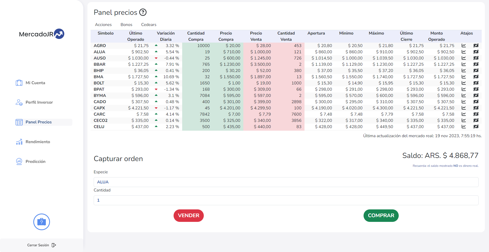
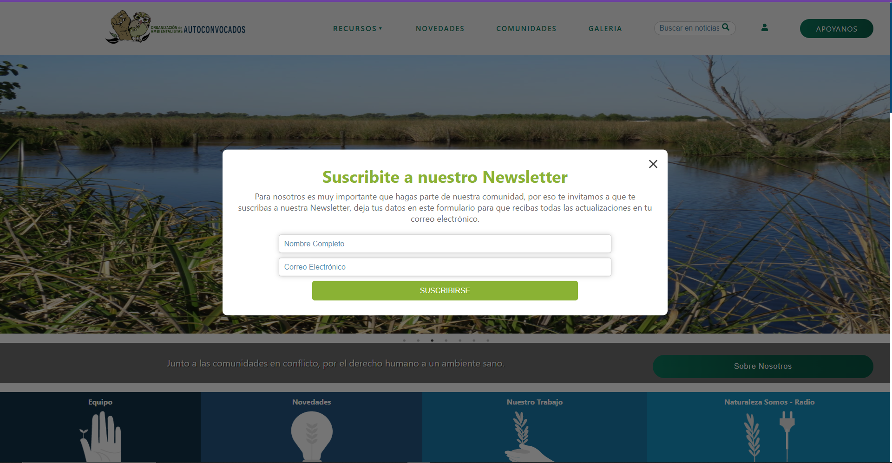
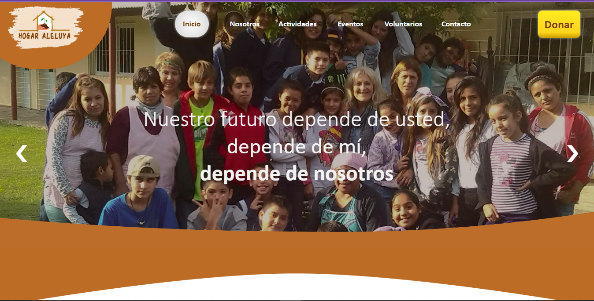

Mis Proyectos Seleccionados
Una selección de mis trabajos más recientes en diseño de interfaces y desarrollo full-stack, enfocados en la experiencia de usuario y el rendimiento.

ICARDS – Plataforma educativa con IA
Plataforma educativa desarrollada como trabajo universitario, orientada a la generación automática de flashcards mediante inteligencia artificial. Integra procesamiento de lenguaje natural para analizar PDFs y crear contenido educativo de forma automática, aplicando principios de Clean Architecture para asegurar escalabilidad y mantenimiento.
React
Material
UI
Node.js
Prisma ORM
IA aplicada
NLP / OpenAI API
Proyecto académico

Mercado Junior – Simulador de Inversiones
Simulador de inversiones desarrollado como proyecto final de carrera, enfocado en la educación financiera. Incluye perfiles de riesgo, visualización de datos históricos del mercado y paneles interactivos para la simulación de operaciones bursátiles..
Angular
Spring
Boot
MYSql
Análisis financiero
Trabajo final de carrera

Plataforma Web Institucional – Organización Ambientalista
Desarrollo y migración de una plataforma web institucional como trabajo voluntario, reemplazando un CMS tradicional por una arquitectura moderna basada en Node.js y React. Incluye portal de noticias, panel administrativo y mantenimiento evolutivo post-lanzamiento.
React
Node.js
MySql
Migración tecnológica
Voluntariado

Sitio Web Institucional – Hogar Aleluya
Desarrollo completo del sitio web institucional, desde el diseño de prototipos en Figma hasta el despliegue en Firebase Hosting. Proyecto orientado a mejorar la presencia digital de una organización social.
Diseño
+ desarrollo
HTML+
CSS
Javascript
JQuery
Firebase
Proyecto
end-to-end
¿Te gusta lo que ves?
Podemos trabajar juntos en tu próximo gran proyecto.